CRUD en Elasticsearch y Analizadores¶
CRUD(crear, leer, actualizar y borrar) básico en Elasticsearch¶
API Rest¶
Elasticsearch comparte todas sus funcionalidades desde su API Rest. Por lo que para operar con el sistema le mandaremos sentencias HTTP:
- GET: Solicitar un recurso
- POST: Solicitar la creación de un recurso
- PUT: Actualización de un recurso
- DELETE: Borrar un recurso
La API de Elastic es muy completa. Nosotros veremos solamente algunos ejemplos. En la documentación oficial tenemos los detalles de toda la API
https://www.elastic.co/guide/en/elasticsearch/reference/current/rest-apis.html
Podemos utilizar cualquier cliente REST para operar con Elasticsearch, por ejemplo CURL o Postman. Por ejemplo, podemos ver los índice que tenemos mediante consola y CURL
curl -XGET localhost:9200/_cat/indices
dev tools de kibana
Nosotros utilizaremos kibana para realizar las consultas como hicimos en la instalación. Nos facilita la edición de consultas. Tienes todas las consultas de este tema en: Fichero con los ejemplos. Puedes copiar todas las sentencias en dev tools e ir ejecutando una a una a medida que avances o ir copiando una a una.
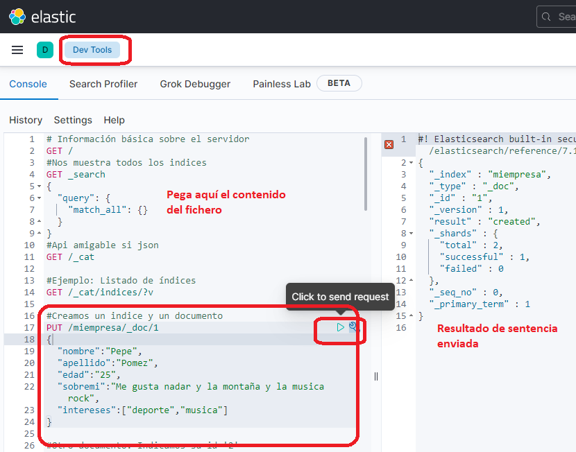
CREAR¶
En elastic no es necesario definir la estructura de un índice(tipos de los campos y documentos), lo creará si no existe con la estructura del documento insertado detectando automáticamente los tipos.
Vamos a probar un ejemplo. Insertamos un empleado en un índice que no existe llamado empresa desde Kibana
PUT /miempresa/_doc/1
{
"nombre":"Pepe",
"apellido":"Pomez",
"edad":"25",
"sobremi":"Me gusta nadar y la montaña y la musica rock",
"intereses":["deporte","musica"]
}
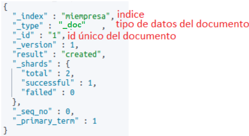
Vamos a insertar dos más:
PUT /miempresa/_doc/2
{
"nombre":"Maria",
"apellido":"Perez",
"edad":"35",
"sobremi":"Me gusta el baloncesto, la montaña y a musica",
"intereses":["deporte","lectura"]
}
PUT /miempresa/_doc/3
{
"nombre":"Fer",
"apellido":"Perez",
"edad":"28",
"sobremi":"Me encanta las tardes jugando al ajedrez y pescar los sabados",
"intereses":["ajedrez","pesca"]
}
Si queremos que el id lo asigne automáticamente tendremos que utilizar POST
POST /miempresa/_doc/
{
"nombre":"Carmen",
"apellido":"Garcia",
"edad":"38",
"sobremi":"Voy al a bailar y amo viajar, sobre todo a sitios montañosos",
"intereses":["deporte","viajar"]
}
id lo asigna el sistema
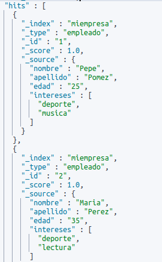
Ejercicio 2¶
Ejercicios
-
Crea un documento con id 5 en el índice “miempresa” con tus datos personales.
-
Crea un documento con datos inventados en el que el id lo genere el sistema.
Indica las sentencias y captura de pantalla con el resultado devuelto.
Búsqueda básica¶
El método GET nos permite realizar búsquedas en nuestro índice. Por ejemplo. Si queremos todos los empleados:
GET /miempresa/_search
vemos que nos devuelve un JSON con todos los documentos.
En la propia estructura del endpoint podemos ajustar la búsqueda mediante parámetros. Por ejemplo
GET /miempresa/_search?q=apellido:Perez
probarlo y veréis que el resultado obtenido es el esperado.
También podemos buscar un documento desde su id
GET /miempresa/_doc/2
Si buscáramos un documento y no se encuentra
GET /miempresa/_doc/7
podríamos consultas el error en el HEAD del mensaje HTTP(Error 404) o en los datos devueltos
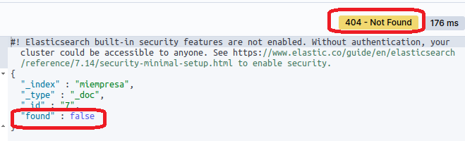
Búsquedas simples con Query DSL¶
Pero este tipo de búsqueda anterior está limitado. Tenemos un potente lenguaje de consulta llamado Query DSL
https://www.elastic.co/guide/en/elasticsearch/reference/current/query-dsl.html
es bastante intuitivo, en la consulta le enviamos un JSON con el formato del lenguaje. Por ejemplo para la consulta anterior podemos hacer los siguiente
GET /miempresa/_search
{
"query": {
"match": {
"apellido": "Perez"
}
}
}
GET /miempresa/_search
{
"query": {
"bool":{
"must":{
"range":{
"edad":{"gt":30}
}
}
}
}
}
GET /miempresa/_search
{
"query": {
"match": {
"sobremi": "montaña nadar"
}
}
}
_score con un valor numérico. Los resultados nos lo devuelve ordenados por defecto según un valor en el que las coincidencias son mayores.
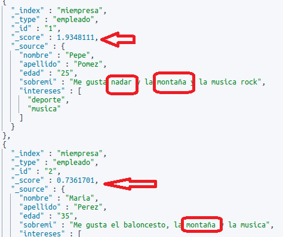
También podemos consultar frases completas
GET /miempresa/_search
{
"query": {
"match_phrase": {
"sobremi": "me gusta"
}
}
}
GET /miempresa/_search?size=0
{
"aggs": {
"all_intereses": {
"terms": {
"field": "intereses.keyword"
}
}
}
}
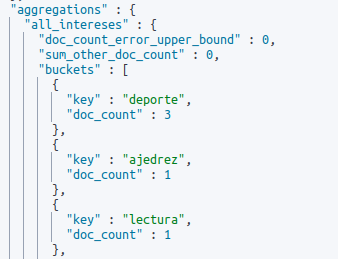
Si quisiéramos traer una parte de los campos del documento podemos indicarlo
GET /miempresa/_search
{
"query": {
"match_all": {}
},
"_source": ["nombre"]
}
Consulta ordenada¶
Podemos solicitar la consulta ordenada por algún campo
Busquedas ordenadas
El campo por el que ordenes no puede ser de tipo “text”, nos daría un error. Estos campos son analizados. Para ordenar tiene que ser de tipo keyword
GET /miempresa/_search
{
"query": {"match_all": {}
},
"sort": [
{"nombre": "asc"}]
}
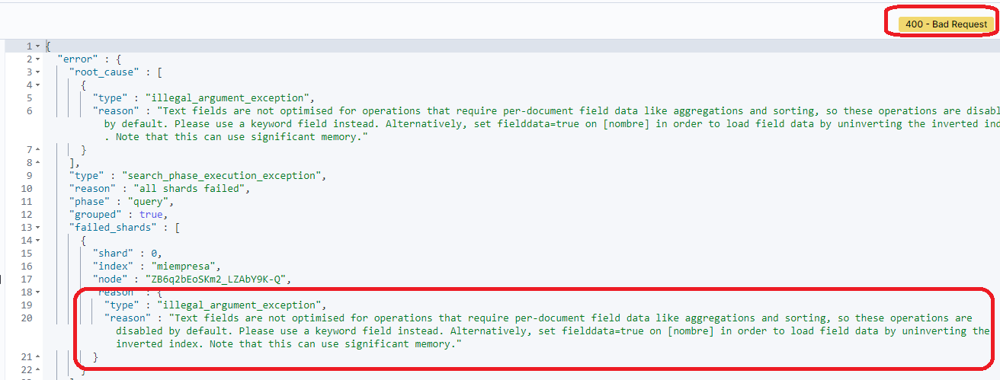
Es necesario utilizar el campo de tipo keyword
Podemos ver los tipos de datos de nuestro índice mediante
GET miempresa/_mapping
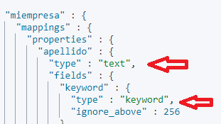
El tipo text se encuentra analizado y el keyword no lo está
Ordenar por keyword
Tenemos que ordenar por el campo no tokenizado de tipo keyword
GET /miempresa/_search
{
"query": {"match_all": {}
},
"sort": [
{"nombre.keyword": "asc"}]
}
Score y algoritmo TF/IDF¶
Si no le indicamos campo de ordenación, devuelve por orden de _score. El score lo calcula utilizando un algoritmo que depende del tipo de query o búsqueda que realicemos.
El algoritmo que utiliza elasticsearch por defecto para calcular el _score o la relevancia de los documentos es el
TF/IDF, term frequency/inverse document frequency
que calcula cómo de similar es el contenido de un campo de texto con respeto al texto indicado en la query. Es complejo de entender pero podemos pedir en la consulta como obtiene el score para entender mejor el resultado
GET /miempresa/_search?explain=true
{
"query": {
"match": {
"sobremi": "montaña nadar"
}
}
}
Ejercicio 3¶
Ejercicio
Crea sentencias para buscar los siguientes documentos
- Busca los empleado llamados “Maria”
- Busca los empleados menores de 30 años. El operador menor es “lt”
- Busca los empleados que les guste el “ajedrez”
- Busca todos los empleados ordenados por apellido. Recuerda utilizar
apellido.keyword
Modificar un documento¶
En elasticsearch los documentos son inmutables. Para actualizar, crea una versión del documento y cuando puede lo re-indexa y sustituye
PUT /miempresa/_doc/3
{
"nombre":"Fer",
"apellido":"Perez",
"edad":"29",
"sobremi":"Me gusta descansar",
"intereses":["ajedrez","pesca","canicas"]
}
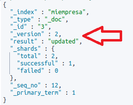
Podemos actualizar parcialmente el documento
POST /miempresa/_update/2
{
"doc":{
"edad":"45"
}
}
POST /miempresa/_update/8
{
"doc": {
"nombre":"Pili",
"apellido":"Bas",
"edad":"27",
"sobremi":"Me gusta estar con la familia",
"intereses":["patinar","pintar"]
},
"doc_as_upsert":true
}
https://www.elastic.co/guide/en/elasticsearch/reference/current/docs-update.html
Borrar documento¶
Podemos borrar un documento del índice mandando un DELETE e indicando el id del documento.
DELETE /miempresa/_doc/2
Tipos de datos y Mapping de los campos¶
Si consideramos el índice como una base de datos en el mundo SQL, el mapeo es similar a la definición o esquema de la tabla. En elasticsearch tenemos muchos tipos de datos. Podemos consultarlos en su web:
https://www.elastic.co/guide/en/elasticsearch/reference/current/mapping-types.html
Algunos de los tipos de ElasticSearch son:
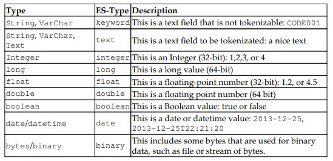
Mapping dinámico¶
Anteriormente, cuando hemos creado los documentos no hemos definido tipos, pero si consultamos el esquema del índice, vemos que se han asignado tipos:
para ver el esquema del índice
GET /miempresa/_mapping
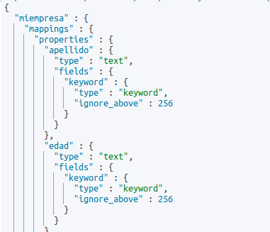
Incluso vemos que se ha asignado dos tipos a algunos campos
Durante la fase de indexación del documento, Elasticsearch comprueba internamente si el tipo _doc existe, de lo contrario crea uno dinámicamente
Podemos ver los tipos de campos que reconoce en:
https://www.elastic.co/guide/en/elasticsearch/reference/current/dynamic-field-mapping.html
Elasticsearch tiene una completa Api para la manipulación de índices
https://www.elastic.co/guide/en/elasticsearch/reference/current/indices.html
Mapping explícito¶
Podemos definir nosotros el mapping para acelerar la indexación, modificar datos, definir tokens…..
https://www.elastic.co/guide/en/elasticsearch/reference/current/explicit-mapping.html
Por ejemplo, vamos a crear un índice nuevo para un catálogo de productos.
Creamos el índice
PUT /catalogo
Es importante tener claro que el tipo keyword no es analizado(tokenizado…) para las búsquedas, como sí lo hace con los de tipo text.
PUT /catalogo/_mapping
{
"properties" : {
"cod" : {"type" : "keyword"},
"alta" : {"type" : "date"},
"nombre" : {"type" : "text"},
"descripcion" : {"type" : "text"},
"cantidad" : {"type" : "integer"},
"precio" : {"type" : "double"}
}
}
GET /catalogo/_mapping
PUT /catalogo/_doc/1
{
"cod":"COD01",
"alta":"2021-09-02",
"nombre":"PC IBM",
"descripcion":"Portatil IBM última generación con 32GB y 1T i7",
"cantidad":8,
"precio":400.0
}
GET /catalogo/_doc/1
PUT /catalogo/_mapping
{
"properties" : {
"descatalogado" : {"type" : "boolean"}
}
}
- store (por defecto falso): Esto marca el campo para ser almacenado en un índice separado para una rápida recuperación. El almacenamiento de un campo consume espacio en disco, pero reduce el cálculo si necesita extraerlo de un documento (es decir, en scripting y agregaciones). Los valores posibles para esta opción son falso y verdadero.
- index: Esto define si el campo debe indexarse o no. los valores posibles para este parámetro son verdadero y falso. Los campos de índice no son buscable (verdadero por defecto).
- null_value: esto define un valor predeterminado si el campo es nulo.
- boost: Esto se usa para cambiar la importancia de un campo (predeterminado 1.0). Boost funciona solo a nivel de término, por lo que se usa principalmente en términos, términos, y consultas de coincidencias.
- search_analyzer: Esto define un analizador que se utilizará durante la búsqueda. Si no está definido, se utiliza el analizador del objeto principal (por defecto, nulo).
- include_in_all: Esto marca el campo actual que se indexará en el especial _all (un campo que contiene el texto concatenado de todos los campos) (predeterminado cierto).
- term_vector:Otro parámetro importante, disponible solo para el mapeo de texto, es term_vector
Por ejemplo, si no queremos que se indexe un campo
PUT /catalogo/_mapping
{
"properties": {
"codorigen": {
"type": "keyword",
"index": false
}
}
}